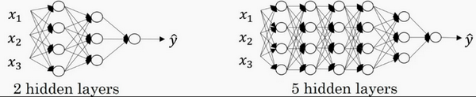

深度神经网络
目前为止学习了只有一个单独隐藏层的神经网络的正向传播和反向传播，还有逻辑回归 并且还学到了向量化，这在随机初始化权重时是很重要 接下来要做的是把这些理念集合起来，这样就可以执行你自己的深度神经网络
深层神经网络
复习下前面的内容：
逻辑回归和一个隐藏层的神经网络，结构如下：

注意，神经网络的层数是这么定义的： 从左到右，由0开始定义 ，比如上边右图 \(x_1\) , \(x_2\) , \(x_3\) 这层是第 \(0\) 层，这层右边的隐藏层是第 \(1\) 层，由此类推。如下图左边是两个隐藏层的神经网络，右边是5个隐藏层的神经网络：

严格上来说逻辑回归也是一个一层的神经网络，而上边右图是一个深得多的模型：
- 有一个隐藏层的神经网络，就是一个两层神经网络
- 当算神经网络的层数时，不算输入层，只算 隐藏层 和 输出层
但是在过去的几年中，研究者已经意识到有一些函数，只有非常深的神经网络能学会，而更浅的模型则办不到
尽管对于任何给定的问题很难去提前预测到底需要多深的神经网络，可以先去尝试逻辑回归，尝试一层然后两层隐含层
然后把隐含层的数量看做是另一个可以自由选择大小的超参数，再保留交叉验证数据上评估，或者用开发集来评估
现在来看下深度学习的符号定义：

上图是一个4层的神经网络，有 3 个隐藏层
可以看到，第一层有5个神经元数目，第二层5个，第三层3个
用 \(L\) 表示层数： \(\mathbf{L} = 4\) , 输入层的索引为 \(0\) ：
- 第一个隐藏层 \(n^{[1]} = 5\) 表示有5个隐藏神经元
- 同理 \(n^{[2]} = 5\) , \(n^{[3]} = 3\) , \(n^{[4]} = 1\) （输出单元为1）
- 输入层 \(n^{[0]} = n_x = 3\)
在不同层所拥有的神经元的数目，对于每层 \(a^{[l]}\) 都用来记作 \(l\) 层激活后结果
会在后面看到在正向传播时，最终能会计算出这个结果
- 通过用激活函数 \(g\) 计算 \(z^{[l]}\) ，激活函数也被索引为层数 \(l\) , 然后用 \(w^{[l]}\) 来记作在 \(l\) 层计算值的 权重
- 类似的也有 \(b^{[l]}\)
- 输入的特征记作 \(x\) ，但是 \(x\) 同样也是 \(0\) 层的激活函数，所以 \(x = a^{[0]}\)
- 最后一层 \(a^{[L]}\) 等于这个神经网络所预测的输出结果